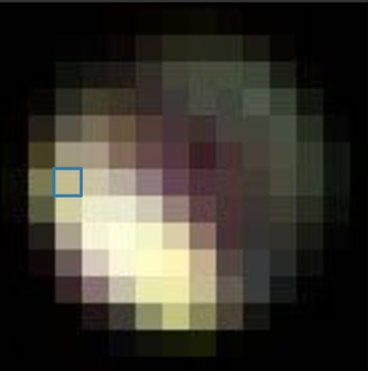
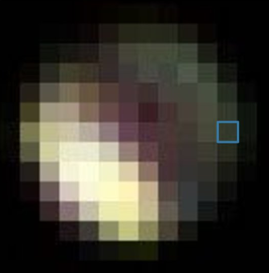
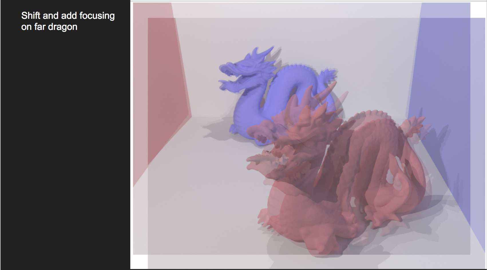
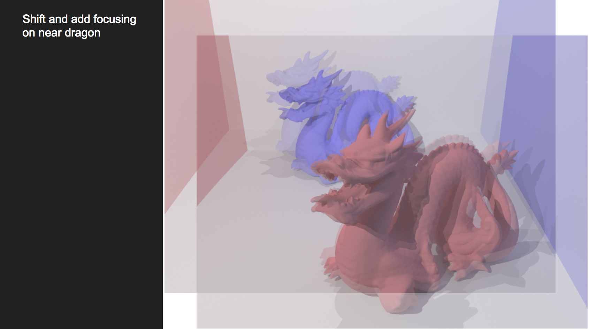
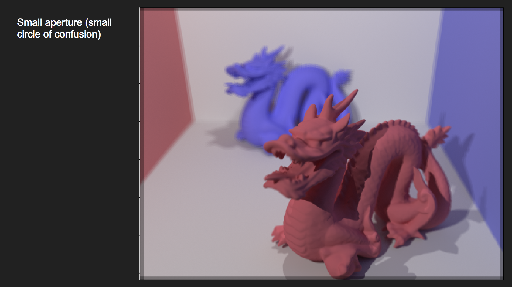
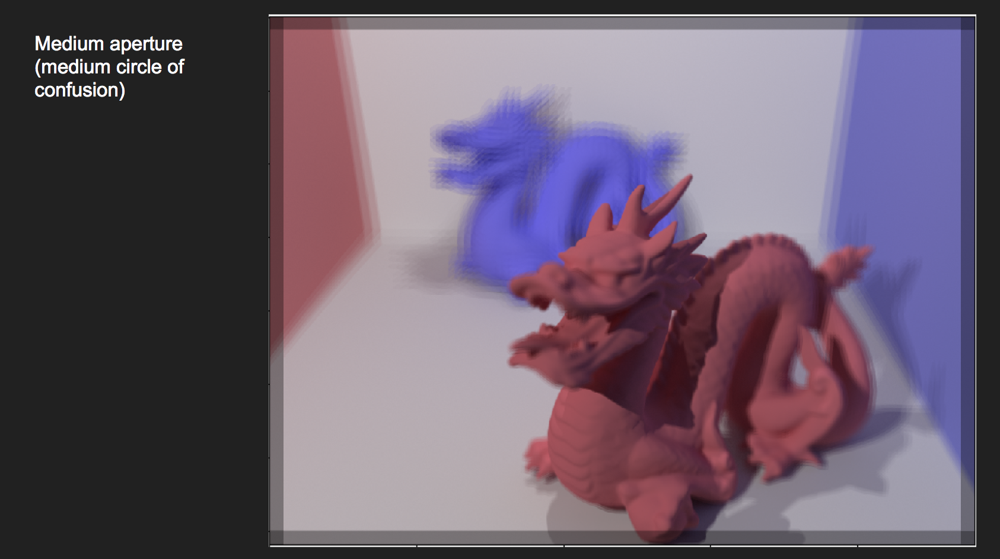
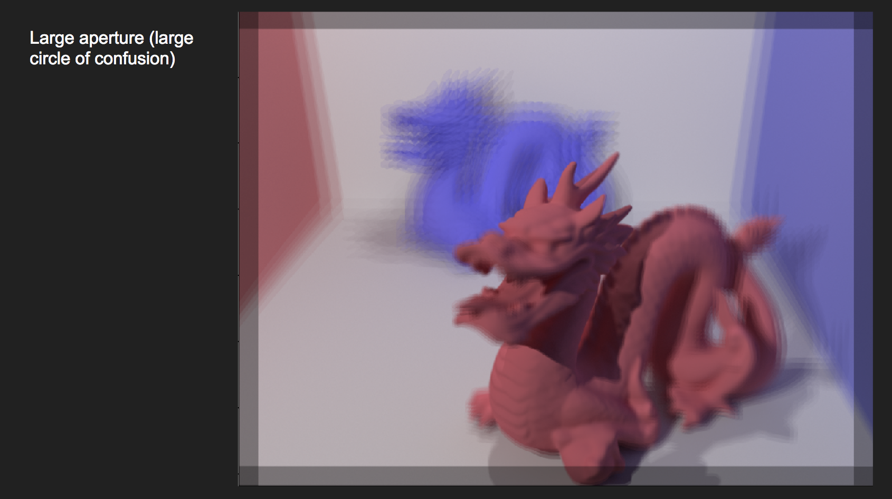
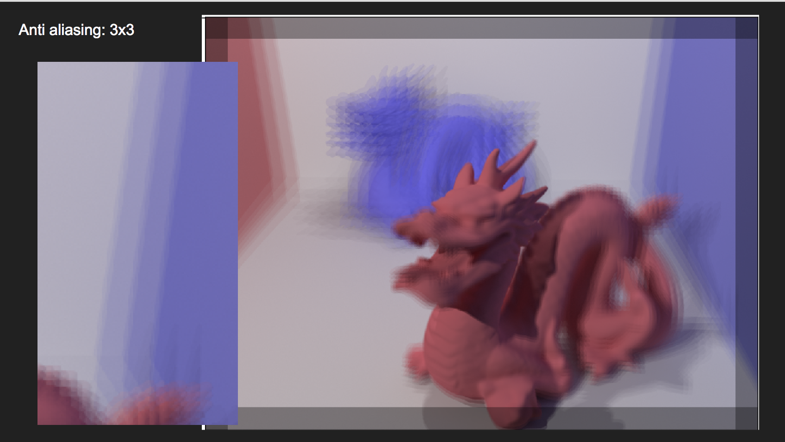
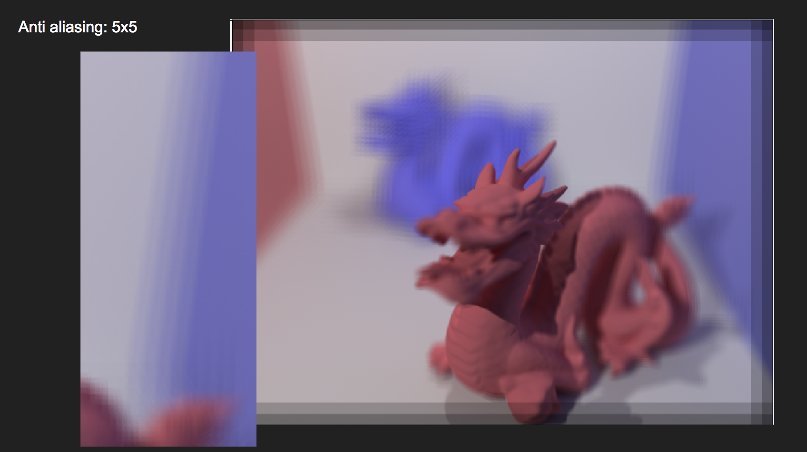
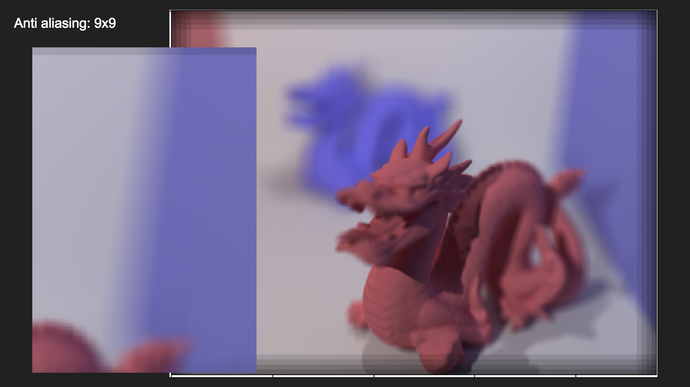

As a group, we agreed to change our project completely from our original plan (Nvidia OptiX to optimize path tracing), as we did not realize that using the Nvidia OptiX API would require having a Nvidia GPU in our system. One group member did have a GPU, but building the pathtracer project on Windows proved to be a whole project on its own, so we decided to switch to the light field camera project that built off the existing pathtracer code. Our objective was to emulate the multilens array shown in lecture to simulate a plenoptic camera. To do so, we had to make the assumption that pinhole images looked like subpixel images, and leveraged command line arguments for easy camera shifting. Using our grid of images, we could recreate images using Python and the shift and add algorithm presented in class. Playing around with this allowed for refocusing at different depths. As a final touch, we implemented antialiasing by taking a larger grid of subpixel images for the final, summed image.
To achieve multiple shots in a localized area through our pinhole camera model, we needed an efficient way to render multiple images on multiple machines simultaneously, so one of the first goals we accomplished was enabling command line arguments for changing the camera's position and its target location (where it was pointing at). Through some simple code digging we created simple calls from main to application to camera that set the spherical coordinates of the camera and target location, as well as supporting printing out these coordinates in the edit mode of the renderer. We also printed out the X and Y normals to the camera direction from the c2w member of camera to be able to add shifts to our camera position while being on the same XY plane.
With the ability to set up renders in a small, localized area in the input image, we could now simulate a microlens by taking individual shots in a NxN grid with set offsets. The offsets were generated by shifting by some set amount in the X normal and Y normal directions.
|

|

|
[Image courtesy of Light Field Cameras II Lecture]
We found that with just a 3x3 example, we were able to accomplish the "shift and add" algorithm explained in lecture to focus near or far in the scene. To get a more precise and adjustable focus, we leveraged bilinear interpolation between the shifts to achieve non-integer shift results. Initially, the focus is set at infinity (images of the nxn grid stacked directly on top of each other). As we pulled these images apart, the focus came in closer:
|  |  |
We experimented with different small offsets between subpixel images to test effects on simulated aperture size and depth of field. Judging by the blurs in the sum of our NxN renders, we found that smaller shifts in the images generated a small aperture and large depth of field, while larger shifts generated a large aperture and small depth of field:
|  |  |  |
We experimented with antialiasing by taking more renders (higher NxN), and found that this improved final image quality significantly.
|  |  |  |
Professor Ren Ng for his slides on light field cameras: 1 2 3